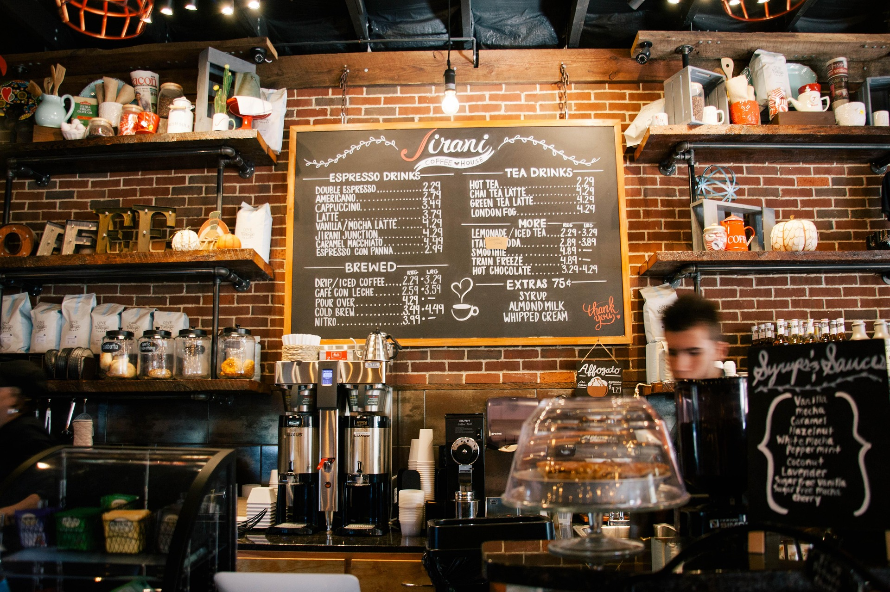

Tervetuloa
Kahvila Kaneli on viihtyisä ja lämminhenkinen kahvila, jossa voit nauttia hyvästä kahvista ja herkullisista leivonnaisista.
Miksi valita Kahvila Kaneli?
- Tuoretta kahvia joka päivä
- Itse valmistettuja leivonnaisia
- Rauhallinen ja viihtyisä ympäristö
Aukioloajat
Olemme auki joka päivä klo 8.00-18.00

Sijainti
Kahvila Kaneli sijaitsee Kokkolan keskustassa lähellä palveluita ja hyvien kulkuyhteyksien varrella.
